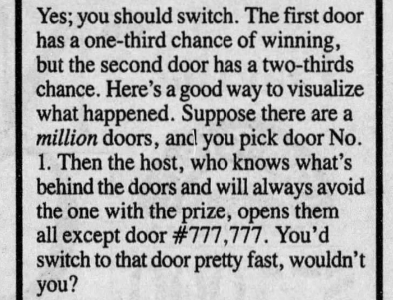

The Game
1. The contestant picks whatever door they think might have the car.
2. The host opens a door with a goat, thus eliminating one losing door.
3. The contestant is given the option to switch to the other unopened door or to stay with the chosen door
So, in short, Mr. Whitaker wanted to know- does it make a difference if you switch doors on "Let's Make a Deal"?
Marilyn Von Savant had a somewhat surprising answer to this question:
Her answer is that you double your winning chances if you switch to the other unopened door when the hosts makes the offer.
If you chose a door out of a million where 999.999 had goats and only one had a car, your odds would obviously not be good. However, if the host opened all the doors, but one, and gave you a choice between that and your chosen one, you'd probably switch. It was one out 999.999, after all.Although it is an explaination, it still doesn't quite make sense to most of use.
With 1 car and 1 goat and 2 doors, it seems to be a 50/50 case, and the fact that the host eliminated a goat door shouldn't really affect the odds.
It does matter that the host removed a losing door, however, according to Mary Von Savant. Using her perplexing example, she claimed that, counter to what we all assume, switching doors is a very good strategy. It doesn't seem to make sense.
This bit of statistics is a counter intuitive as they get. The fact remains, however, that the initially chosen door has a 1/3 chance of winning, the second one has a 2/3 chance, although most of us would say it was the same odds for both doors. Another very odd thing about this problem is that if the host chose at random and happened to chose a goat door, it would indeed be 50/50. Very strange.
At least the solution can be calculated using something called "Bayes' theorem".
Bayes' Theorem allows us to calculate the probability of an event based on prior knowledge of conditions related to the event. The formula is:
Where: